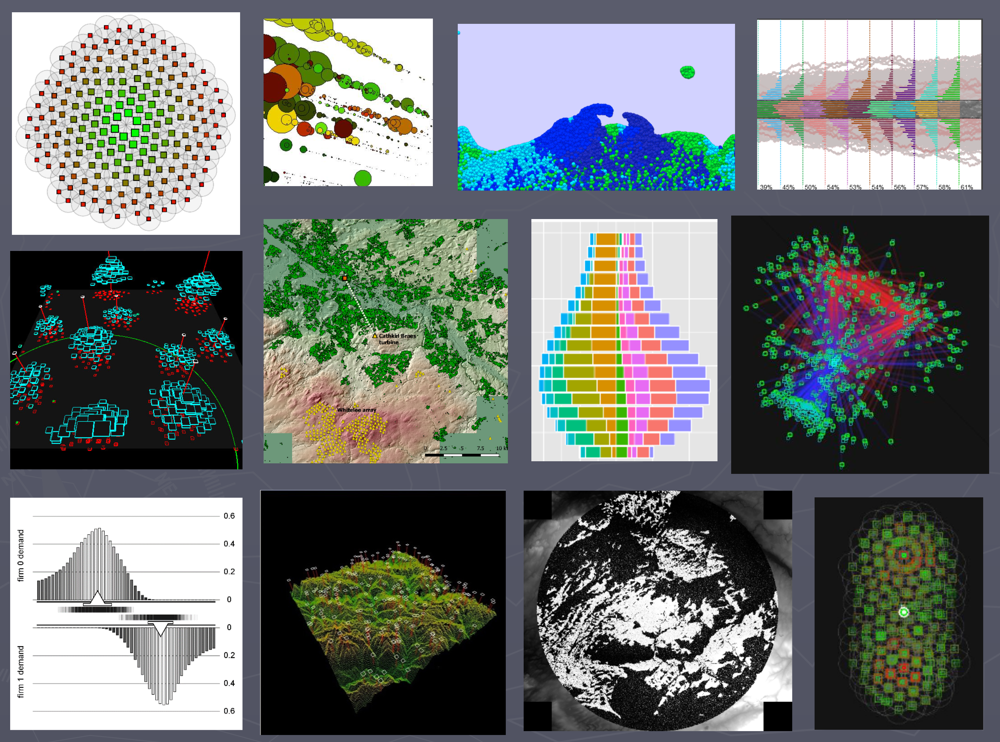
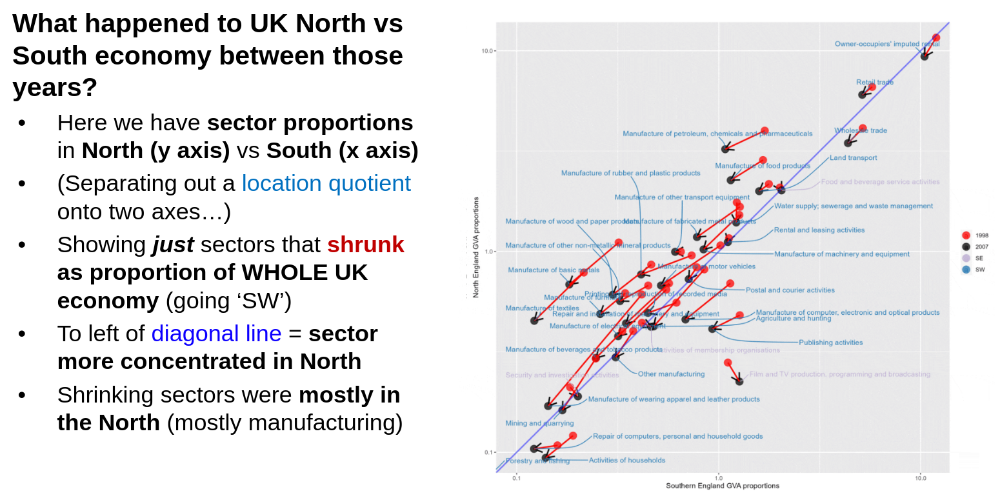
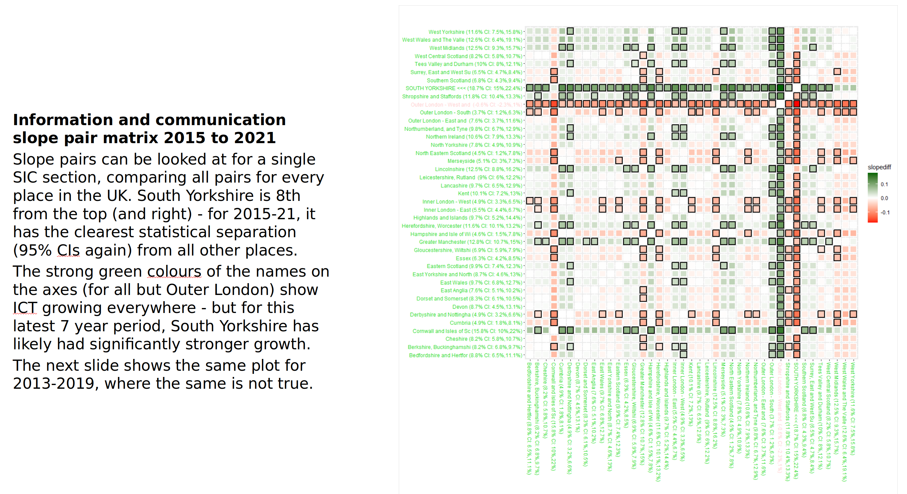
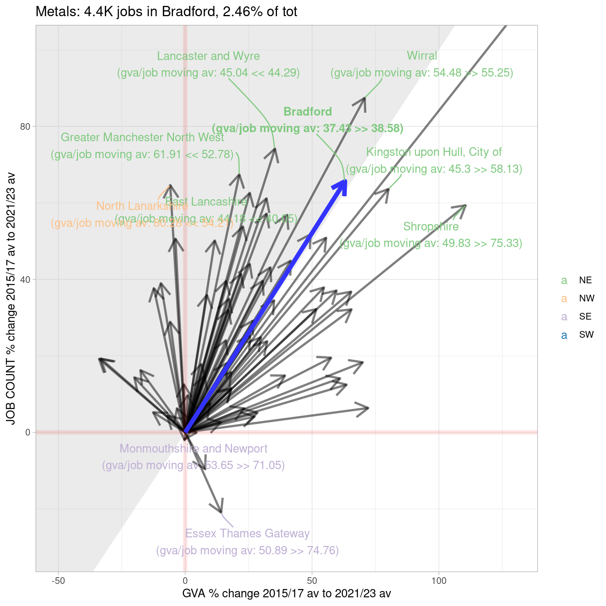
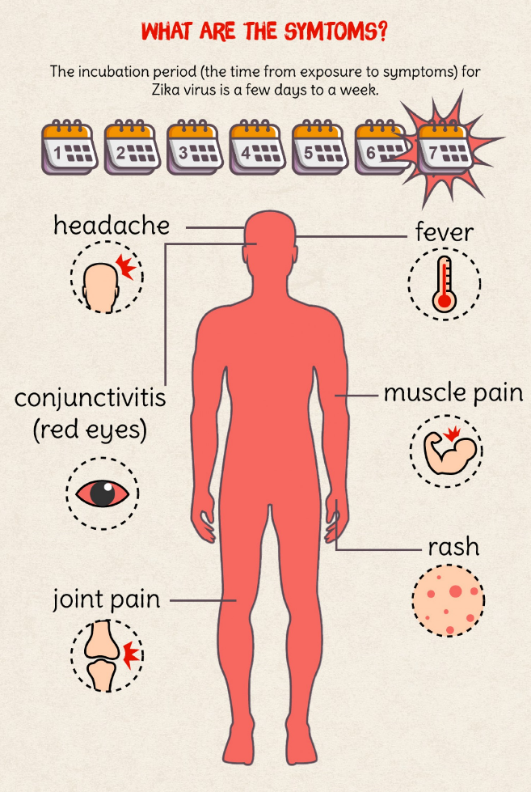

SYMCA / Y-PERN July 2025
INTRO
Slides!
They’re online here if you want quick access to the links: bit.ly/ypernsymca
Y-PERN: “Yorkshire & Humber Policy Exchange and Research Network”
Y-PERN…?
- Research England funded
- Aim: to experiment with ways of strengthening glue between Y&H universities, regional authorities and communities
- So still open question - what’s worked, what hasn’t??
- Diverse range of things happened/happening across the region - see y-pern.org.uk
South Yorkshire
- Me: seconded to SYMCA 2 years ago
- Working also with Hallam team (Peter Wells, Elizabeth Sanderson, Jamie Redman)
- I’m an economic geographer / data scientist by background (with some political studies thrown in)
- And a big fan of making pretty data pictures to try and see it / understand it in different ways…

SYMCA work!
- Plan: I’ll run through examples of what I’ve worked on in my time with SYMCA
- Picking ones that I think tell a story
- These will almost all be various plots, interative maps, dashboards, that kind of thing
- But just a few thoughts on working openly…
Why work openly?
- Not all data work can be done openly. But a lot can, and I think there are compelling reasons to work this way:
- It supports collaboration and learning (bootstrapping capacity building, everyone bringing their expertise)
- It will help build a shared sense of ground truth
- It will avoid wheel reinvention (reproducibility needs this)
- Where possible, build automated pipelines from data source to output
- E.g. below, R reads data directly from Excel files on the web
- Will come back to this in discussion: ideal vs reality?
Use all the data where possible!
- By which I mean:
- A big part of the ‘so what’ of any data analysis is “where does this place sit nationally?”
- So if poss, always analyse national-level data and put a place in context
- With open methods / code, this is usually just as easy as not doing it
- Something e.g. fingertips data already does well
DATA AND PLOTS AND STUFF
ONS Regional GVA data (latest 2023)
- Super-rich, compact dataset - a pain to drag insights out of
- If I had a favourite Excel document…
- First SYMCA ask: show what’s happened / happening to SY sectors
ONS Regional GVA data (latest 2023)
Here’s what it looks like in its Excel home:

GVA data 1: structural change ’98 to ’07

Location quotients a-go-go
- Interactive here or bit.ly/lqecondash
- While that’s loading…
- LQs: a nice way to summarise where sectors are relative to the rest of the UK
- LQ > 1 = sector more concentrated in a place than in the UK as whole
- E.g. if South Yorkshire fab metals manufacture is 10% of our economy and that sector is 5% of the UK’s as a whole, its LQ = 2.
- (LQ < 1 = opposite)
Growth! What grew more than where?
- Inflation-adjusted (chained volume) GVA for this one. Will make proper statisticians have kittens I think, but…
- And cramming as much as possible into a single image!
Growth! What grew more than where?

Business Register and Employment Survey (BRES)
- Job counts down to 5-digit SIC categories (723 of them)
- Survey based, so gets more uncertain, but…
- We can see how the different SIC sector levels nest –>
- Interactive: job counts at different sector levels for latest year in South Yorkshire. bit.ly/bres_sy
Combining GVA and BRES for GVA per worker (Bradford example)

ONS hourly productivity data for 2023: first time we get SY 4 places separately in GVA data
- ITL3 zones in 2025 used for latest 2023 data - we get all four places separated now
- Can see slightly different productivity story for Rotherham vs Doncaster
- Link
Making Companies House data open
- UK Companies House data is already ‘open’ but it’s opaque and a PITA to wrangle.
- Other firms package it up and resell it in useable form but access is limited e.g. < 30K rows
- A lot of value in having entire dataset to play with - it’s amazingly rich (though with weaknesses e.g. only HQ’d firms misses a lot)
CH 1: hexmap of most common broad sector
- 5000m hex, 50+ employees min per firm - link!
- Manufacturing doughnut and Southern Professional/sci/tech belt
- Higher res for zooming in - 1000m and min 10 employees per firm. Less informative of GB econ structure?
CH2: South Yorkshire dashboard
- Link and also bit.ly/sy_ch
CH3: Percent change in firm employee counts by sector (West Yorkshire example!)
Where’s the stuff?
- So all this work/code is openly available (including some training materials)
- github.com/DanOlner for code (and where all the web stuff resides, including these slides)
- Some re-used for the Yorkshire Engagement Portal
- “Regecontools” website where I’m trying to corral all the regional economics work and learning. (bit.ly/regecontools gets there too.)
- An outputs live list: a reasonably complete list of all data, code and outputs
CUTTINGS
Data viz prelude: what’s the difference between an x-ray and an infographic?
X-ray
“At first the student is completely puzzled…”
Infographic
